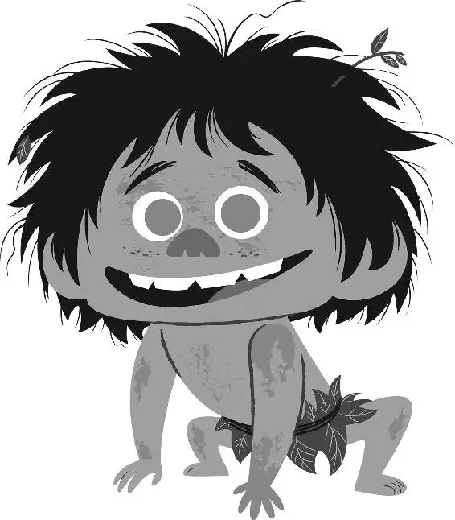

Arlo and the boy were walking along the river when they heard a strange voice call to them from behind the trees. “Hello.”
Arlo looked around, timidly. “Hello?”
“We’ve been watching you,” the voice said.
Arlo walked toward the voice and saw a collection of creatures perched on the branches of a tree. They were all staring directly at Arlo.
“We thought you were going to die,” the voice said.
Arlo still couldn’t tell where the voice was coming from. He searched the animals in the branches, trying to figure it out.
“But then you didn’t,” the voice said.
Finally, two eyes appeared, revealing a Styracosaurus with big branch-like horns. Small creatures of all sorts perched on the outstretched horns. The dinosaur took a step forward, abandoning the camouflage created by the woods.
His name was Forrest Woodbush and the animals sitting in his horns were his collection.
“That creature protected you,” Forrest said. “Why?”
“I-I don’t know. I’m going home,” Arlo said. “Do you know how far Clawtooth Mountain is?”
The red bird sitting in Forrest’s horn chirped and he responded. “Good idea...” He said, turning back to Arlo. “We want him.”
“W-why?” Arlo asked.
“WHY? Cause it’s terrifying out here. He can protect me, like my friends.” Forrest introduced all the creatures to Arlo, explaining how each one helped to keep him safe in the wilderness. The red bird, whose name was Debbie, chirped again and Forrest nodded. He said firmly to Arlo, “We need him.”
“W-wait,” Arlo said. “He—he’s with me.”
“If he’s with you, what is his name?”
“His name? I-I don’t know,” Arlo answered.
“Hmmm... then I will meditate on this.” Forrest calmly closed his eyes for a moment. Then he opened one and quickly blurted, “I name him. I keep him.”
Forrest continued to hum, closing his eyes and shouting out names as they came to him. “Mmm... Killer!”
All eyes darted toward the boy. He gave no response.
“Mmm... Beast!”
The boy still didn’t answer.
“Mmm... Murderer!”
Arlo was all of a sudden nervous. He started throwing names out, too. He had no idea what he was doing. But Arlo couldn’t lose him again.
“Uh... Grubby!” Arlo said, trying to get the boy’s attention.
The boy sniffed around in the dirt, ignoring them.
Arlo and Forrest continued to blurt out names, but nothing seemed to stick.
“Violet!”
“Spike!”
“Lunatic!”
Finally, Arlo cried out, “Spot!”
The boy stopped, turned, and looked up. A big smile grew across Arlo’s face. “C-come here, Spot! Come here!”
The boy happily trotted over to Arlo and Forrest sighed. “He is named. You clearly are connected... Good for you. On your path to Clawtooth Mountain, that creature will keep you safe. Don’t ever lose him.”
Then the red bird began to chirp loudly and angrily. “No. No...no! You—you can’t have him Debbie!” Forrest scolded the bird. She took off and flew at Arlo, chirping wildly, scaring him. Spot jumped at her, growling. Then the two ran as the bird continued to follow.
“Debbie!” They heard Forrest call. “Stop! You’re better than this!”
Arlo and Spot hid behind a boulder to escape. As Debbie flew by with Forrest chasing behind her, the two unlikely friends looked at each other and laughed.
